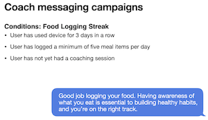
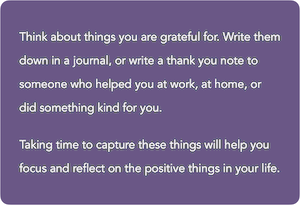
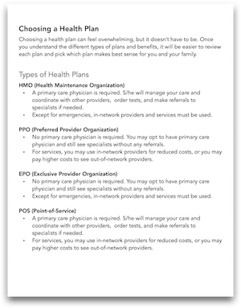

Nearly all of my work has been in the health-tech space. People can be very sensitive about their health information, and using the right tone and voice is critical to building trust. I enjoy the challenging complexity of maintaining a voice that fosters this trust, empowers the user, inspires confidence in their ability to take action.
I've written tech specs and manuals for devices, both for technical and non-technical audiences.
Whether it's writing clear FAQs to allow users to easily find answers to top questions or writing articles, guides, and marketing communications, I focus on how to improve the user experience.

Diabetes, heart disease, cancer - these are some of the health conditions for which I've created content. I'm a national-board certified health and wellness coach, and I've also written more general content about domains of wellness, such as stress, sleep, nutrition, and activity.

I was part of the initial launch of Covered California, the state's health exchange created as a result of the Affordable Care Act. This work was the first step into my career in health. I learned the complexity of healthcare and developed my ability to explain it in simple terms.
